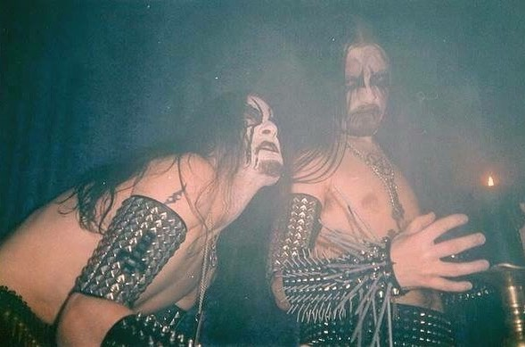

Dimmu Borgir are a symphonic black metal band out of Norway.
After forming in 1993, they have gone on to release 10 albums despite a
revolving lineup of changing members.
On this page I will be giving you a taste of their musical style,
and enough information to help you start exploring their discography.
Starting out with only three members, Dimmu Borgir have become one of the most well known metal bands out of Norway. Their first two albums are considered by purists to be the only true "Black Metal" albums in their discography. In the folowing releases, the band members began to switch out one after another. With a steady flow of new artists to work with, the band began to expirement with more orchestral sounds, a more symphonic metal than their old sound. Many old fans accused them of selling out as they became more and more widespread in both popularity, and in their range of musical creativity.
With each new album, the production value, and technical skills of the band keep getting better. They did away with the synthesizers, and began recording and touring with orchestras, and choirs. With more intricate costumes, and theatrical live shows, they bring some serious energy to any venue they perform at. Through all of the changes, disagreements, and the ups and downs of being in a band, the only two members that have stayed consistant are Shagrath and Silenoz pictured below.
There are plenty of websites out there that can give you a more comprehensive discography, check the links section at the bottom of the page to learn more. Here I will outline their major albums and the years they came out, followed by my top five favorite Dimmu Borgir songs and what albums they are found on.
| Song Title | Album Name | |
|---|---|---|
| 1. | Sorgens Kammer - Del II | Stormblåst MMX |
| 2. | Ætheric | Eonian |
| 3. | Progenies of the Great Apocalypse | Death Cult Armageddon |
| 4. | A Jewel Traced Through Coal | Abrahadabra |
| 5. | Council of Wolves and Snakes | Eonian |
There are so many great songs to choose from, but these ones stick with me most. This is my opinion. Give these tracks a few good listens, and then pick your own favorites as you explore the rest of their discography. Thanks for stopping by and trying something new today.
Here are some links to get you started!
Official website
Official YouTube playlist
Learn more at the Metal Archives
or listen on iTunes here.